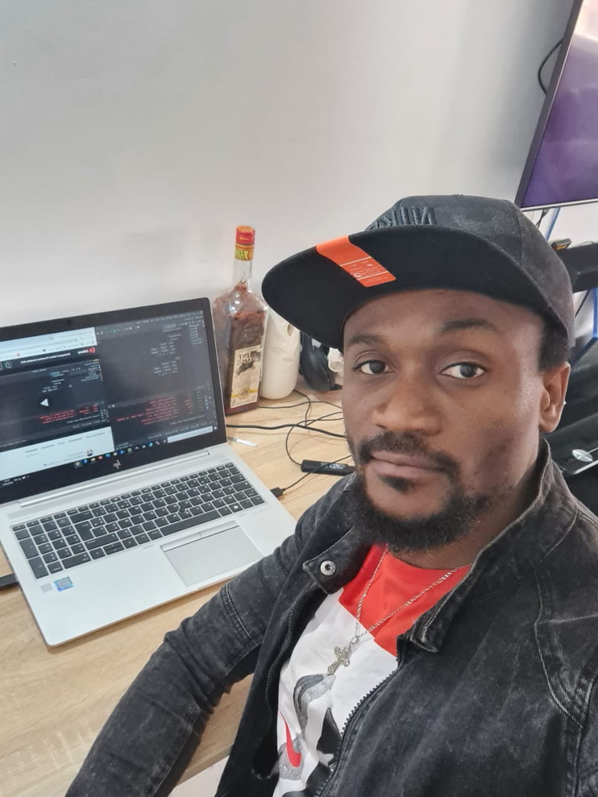

-
Noman Kouacou Placide
-
Appartement N° 15 Lot Al Azhar R2 imm 96 Casablanca 20230
- Nationnalité: Ivoirienne
- Tel: +212633579759
- Email: nomanplacide@gmail.com
Developpeur Full-Stack
Python & Django
Formations
2009: Licence Professionnelle en Système Réseaux et
Télécommunication - Université HETEC Abidjan
2008: Diplôme de Technicien Supérieur en Système Réseaux et
Télécommunication - Université HETEC Abidjan
2006: Baccalauréat de l’enseignement secondaire - Collège Notre
Dame des Lacs Yamoussouhro
Expériences Professionnelles
-
Outsourcia:2015 - 2021
Téléconseiller-Back Office Miste-Auto
-
Sotra:2011
Chargé de la Maintenance des équipements informatiques à la Société de transport abidjanaises
-
Port Autonome d'Abidjan:2010
Stagiaire à la coordination des systèmes d’information du Port Autonome d’Abidjan
Compétences
- HTML
- CSS
- Bootstrap
- Python
- Django